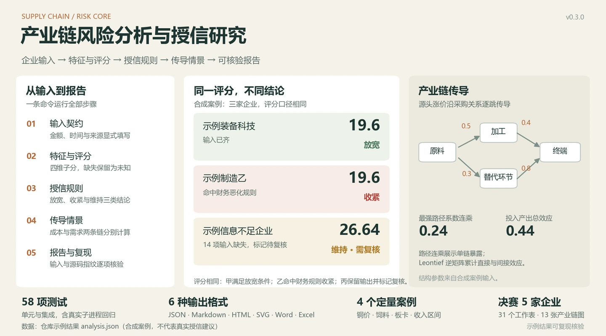
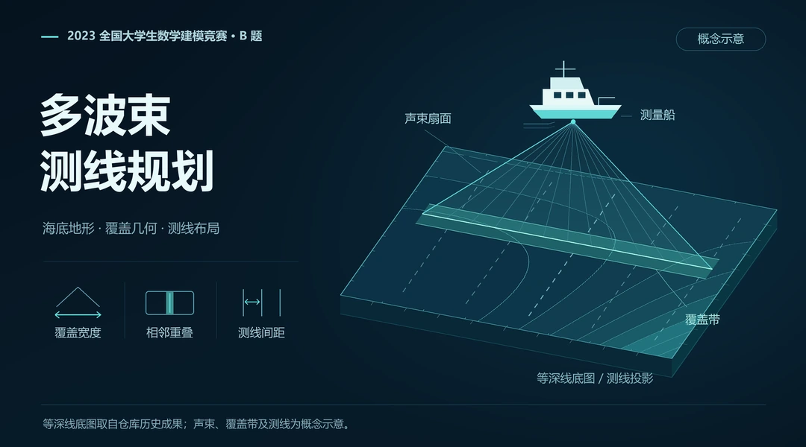

01 サーバー開発
C++ HTTP サーバー
接続が確立してから応答が返るまで、
HTTP リクエストの流れをたどれます。
epoll が接続を管理し、スレッドプールがリクエストを処理。分割受信した要求の解析、ユーザー登録・ログイン、PNG のアップロードに対応します。
コードと説明を見る
主な作品
接続の管理からデータ処理まで、
具体的な課題を通して仕組みを確かめます。
01 サーバー開発
接続が確立してから応答が返るまで、
HTTP リクエストの流れをたどれます。
epoll が接続を管理し、スレッドプールがリクエストを処理。分割受信した要求の解析、ユーザー登録・ログイン、PNG のアップロードに対応します。
コードと説明を見る


04 対話型実験
パラメータを変えながら、キャッシュ置換、アドレス変換、TCP Reno の挙動を一段階ずつ観察できます。
同じアクセス列で LRU と FIFO を比較できます。

日常のために
繰り返す作業に合わせた、
手元で使えるツールです。
版管理された資料に基づく AI カスタマーサポートです。回答を原文までたどれ、デモのアフターサービス操作には実行前の確認が必要です。
TraceDesk を詳しく見る閲覧権限のある知乎コラムを Markdown、オフライン HTML、ローカル画像として保存し、個人の学習や検索に使えます。
詳細とダウンロードさらに見る
問いやデータから始まった試みです。

数理モデリング／チーム作品
2023 年の中国大学生数学建模競賽（CUMCM）B 問に取り組んだチーム作品。観測幅の幾何と測線の制約から海底の測量計画を考えます。

データ可視化
南京の 2023 年の気象記録 365 日分から、月別グラフと年間ワードクラウドで季節の変化を見ます。

Web アプリ
ニュースやお知らせを表示する Vue フロントエンドと、コンテンツ・アカウントを管理する Servlet/JSP バックエンドを組み合わせています。
ノート
計算機の仕組みや数学の疑問についての記録。索引は日本語で読めます。記事本文は中国語です。